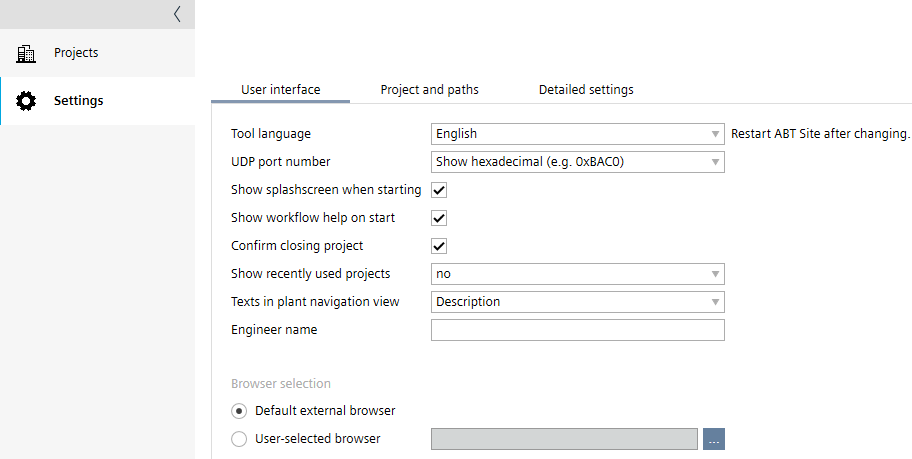
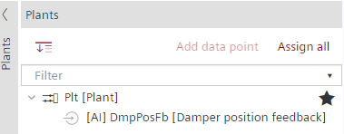
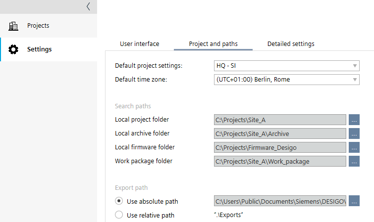
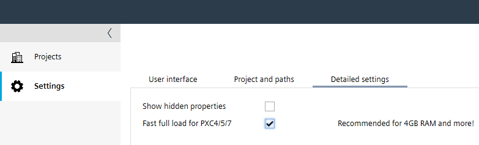

设置
1 | 任务选择器 | 2 | 用户界面选项卡 |
3 | 项目和路径选项卡 | 4 | 详细设置选项卡 |
② User interface tab

环境 | 描述 |
|---|---|
工具语言 | 从已安装的语言中选择 ABT 站点工具语言。工具语言定义 UI 显示的语言。需要重新启动才能使更改生效。 |
UDP port number | 配置 ABT 站点中使用的 UDP 端口格式：
|
| 如果程序启动时的启动屏幕会导致性能问题，请停用该启动屏幕。 |
| 选中该复选框可在每次 ABT 站点启动时显示工作流帮助主题。 |
| 关闭项目时，选定的复选框会显示确认对话框。 |
显示最近使用的项目 | 您可以选择在Projects显示任务和最近使用的项目数量。 激活Show recently used projects如果文件夹中有大量产品，该功能可提高性能。 Note |
工厂导航视图中的文本 | 您可以将工厂导航视图中的显示更改为：
名称 [描述] 选择示例：  |
工程师姓名 | 添加您的姓名或邮件地址。输入的信息将用于设备上的工程数据。它显示在Activities选项卡中的User柱子。 |
 启动时显示启动画面
启动时显示启动画面Browser selection
您可以使用 ABT 站点框架内的浏览器窗口或外部浏览器窗口来设计设备。
环境 | 描述 |
|---|---|
| 单击此选项按钮即可使用系统的默认浏览器进行工程。 |
| 单击此选项按钮可以选择您选择的工程浏览器。 |
 默认外部浏览器
默认外部浏览器 用户选择的浏览器
用户选择的浏览器③ Project and paths tab

环境 | 描述 |
|---|---|
默认项目设置 | 确定新项目默认使用哪个工程单位。如果您选择HQ -US，仅 US 应用程序类型可用。您可以更改每个项目所使用的单位系统Settings > Localization.
Note |
默认时区 | 确定哪个Default time zone默认用于新项目。如果需要，可以自定义项目的时区。 |
本地项目文件夹 | 选择保存项目的目录。无法手动输入路径。单击该字段旁边的按钮可浏览目录。 Note ABT 站点不支持使用共享文件夹（例如，网络或云服务）上的工程数据。 |
本地存档文件夹 | 选择保存存档项目的目录。无法手动输入路径。单击该字段旁边的按钮可浏览目录。 |
本地固件文件夹 | 选择保存固件版本的目录。无法手动输入路径。单击该字段旁边的按钮可浏览目录。 所有固件版本均发布在官方“Desigo 固件库”中。 |
工作包文件夹 | 打开ABT Go文件后选择工作包项目存放的目录。无法手动输入路径。单击该字段旁边的按钮可浏览目录。 |
| 单击此选项按钮可为所有项目定义一个导出路径。每次导出数据时，结果都会保存在指定的文件夹中。 |
| 单击此选项按钮可保存相对于您正在使用的项目文件夹的导出数据。每次导出数据时，结果都将保存在您正在使用的项目文件夹下的 ...\Exports 文件夹中。 |
④ Detailed settings tab

环境 | 描述 |
|---|---|
| 显示项目中的所有对象属性。 |
| 打开项目时预打开编程编辑器的实例，以减少加载时间。如果 RAM 中至少有 4GB 可用，则建议使用。 |